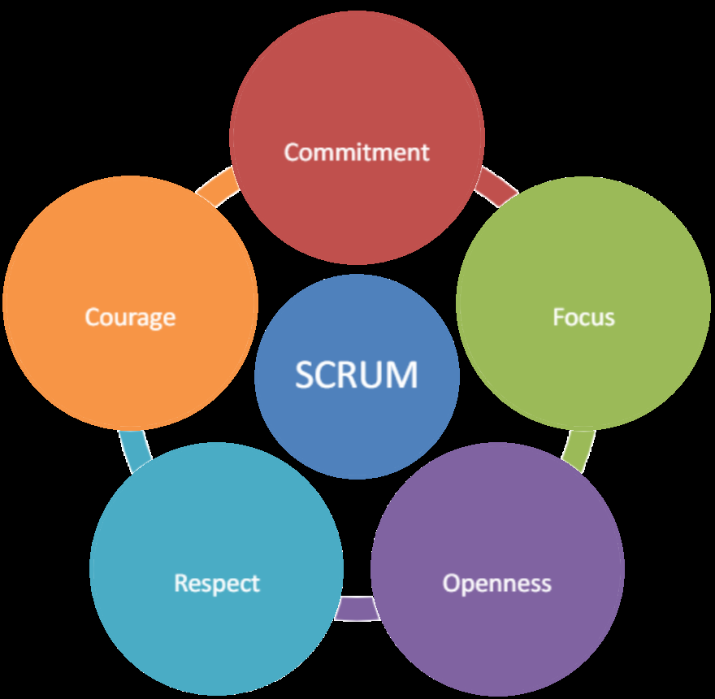

Be sure to read the Agile manifesto
Scrum values
ARTIFACTS OF SCRUM
Product Backlog
The Product Backlog is an emergent, ordered list of what is needed to improve the product. It is the single source of work undertaken by the Scrum Team.
Sprint Backlog
A sprint backlog is a list of work items your team plans to complete during a project sprint. These items are usually pulled from the product backlog during the sprint planning session.
Increment
Increment is a specific step towards achieving the Product Goal. Each Increment is addition to all the previous ones. They are carefully checked to ensure joint work of all Increments. In order to provide value, Increment must be suitable foruse.